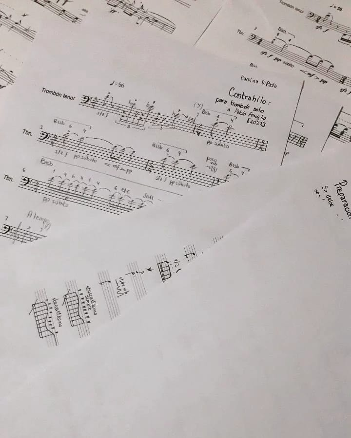
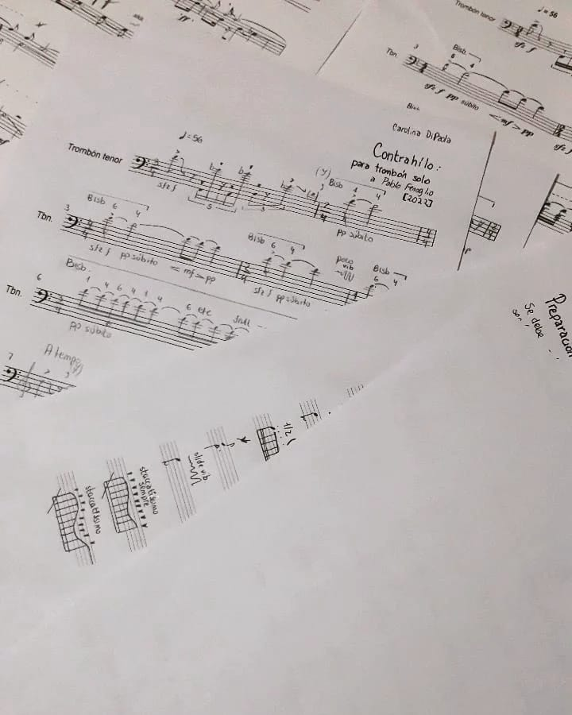
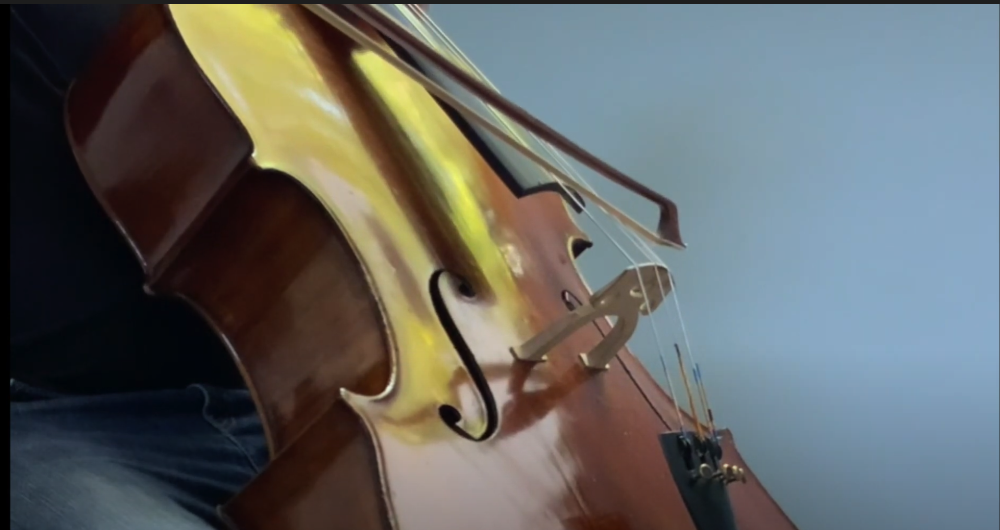
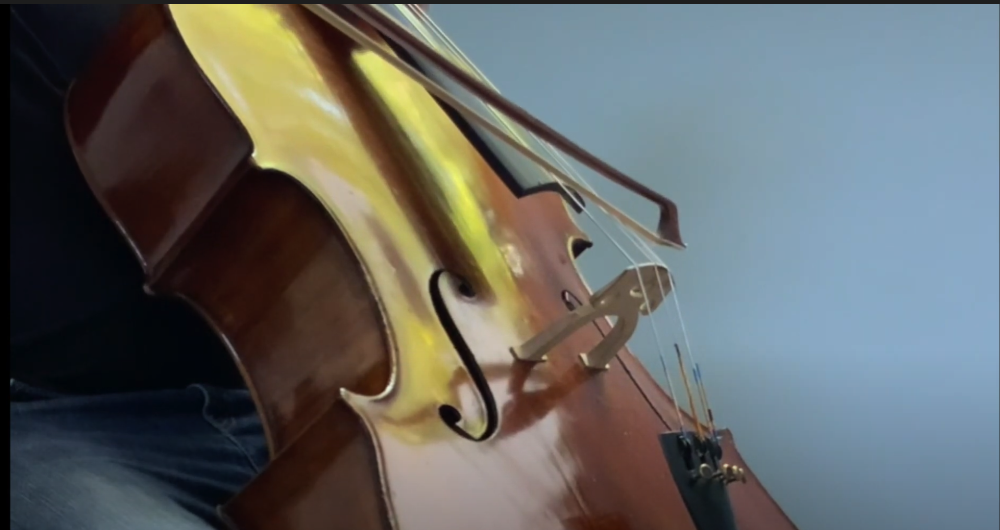

Student of the National University of Tres de Febrero. She began her studies regarding music in 2010, as a guitar player and then through the voice. In 2016, she entered the Bachelor of Music program offered by UNTREF, oriented to the composition of contemporary music. She participated in the Distat Terra Festival-Choele Choel, Río Negro (2022) as a composer, creating a new work for the Maurice Quartet (Italy). She participated in the Arthaus-Buenos Aires workshop (2022) composing a piece for solo trombone dedicated to Pablo Fenoglio. She attended the workshop at the National University of Quilmes (2019) composing a work for the Neón Ensemble (electric guitar, piano and electronics) In addition, she participated in the TACEC - Theater, Center for Experimentation and Creation of the city of La Plata (2018) and the FORUM New Music - National University of Córdoba (2017), where he assisted to lectures given by Mark Andre (Germany), Ensemble Nikel (Switzerland), reConvert project (Spain) and Duo Lavado Fischer (Chile) On the other hand, she is part of the educational team of the Museum of the National University of Tres de Febrero -visual arts-, where educational activities open to the community are carried out. Currently at the university, she works as a teaching assistant in the subject Science and Music, taught by Luciano Azzigotti.
 

 
